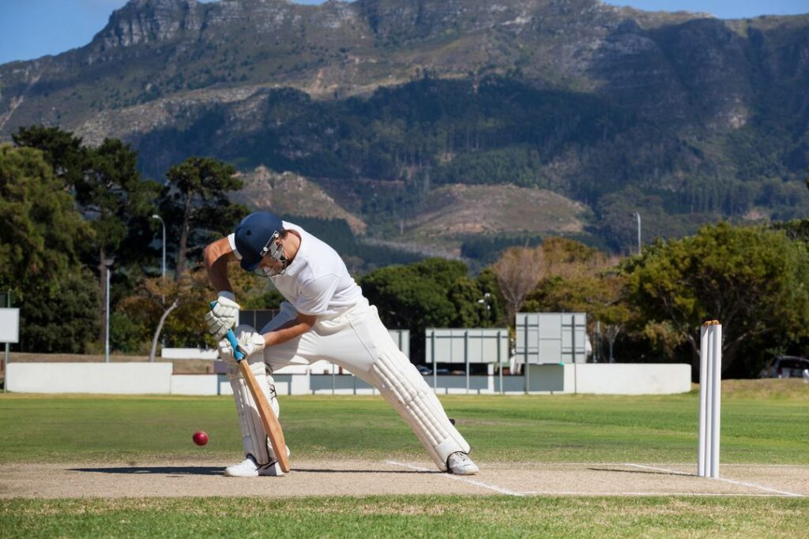

CRICKET

Cricket is a bat-and-ball game played between two teams of eleven players on a field, at the centre of which is a 22-yard (20-metre; 66-foot) pitch with a wicket at each end, each comprising two bails (small sticks) balanced on three stumps. Two players from the batting team, the striker and nonstriker, stand in front of either wicket holding bats, while one player from the fielding team, the bowler, bowls the ball toward the striker's wicket from the opposite end of the pitch. The striker's goal is to hit the bowled ball with the bat and then switch places with the nonstriker, with the batting team scoring one run for each of these exchanges. Runs are also scored when the ball reaches the boundary of the field or when the ball is bowled illegally.
The earliest known definite reference to cricket is to it being played in South East England in the mid-16th century. It spread globally with the expansion of the British Empire, with the first international matches in the second half of the 19th century. The game's governing body is the International Cricket Council (ICC), which has over 100 members, twelve of which are full members who play Test matches. The game's rules, the Laws of Cricket, are maintained by Marylebone Cricket Club (MCC) in London. The sport is followed primarily in South Asia, Australia, New Zealand, the United Kingdom, Southern Africa, and the West Indies
HOCKEY
Hockey is a term used to denote a family of various types of both summer and winter team sports which originated on either an outdoor field, sheet of ice, or dry floor such as in a gymnasium. While these sports vary in specific rules, numbers of players, apparel, and playing surface, they share broad characteristics of two opposing teams using sticks to propel a ball or disk into a goal.
There are many types of hockey. Some games make the use of skates, either wheeled or bladed, while others do not. In order to help make the distinction between these various games, the word hockey is often preceded by another word, as in field hockey, ice hockey, roller hockey, rink hockey, or floor hockey.
In each of these sports, two teams play against each other by trying to manoeuvre the object of play, either a type of ball or a disk (such as a puck), into the opponent's goal using a hockey stick. Two notable exceptions use a straight stick and an open disk (still referred to as a puck) with a hole in the center instead. The first case is a style of floor hockey whose rules were codified in 1936 during the Great Depression by Canada's Sam Jacks. The second case involves a variant which was later modified in roughly the 1970s to make a related game that would be considered suitable for inclusion as a team sport in the newly emerging Special Olympics. The floor game of gym ringette, though related to floor hockey, is not a true variant because it was designed in the 1990s and modelled on the Canadian ice skating team sport of ringette, which was invented in Canada in 1963. Ringette was also invented by Sam Jacks, the same Canadian who codified the rules for the open disk style of floor hockey 1936.
Certain sports which share general characteristics with the forms of hockey, but are not generally referred to as hockey include lacrosse, hurling, camogie, and shinty.
BATMINTON
Badminton is a racquet sport played using racquets to hit a shuttlecock across a net. Although it may be played with larger teams, the most common forms of the game are "singles" (with one player per side) and "doubles" (with two players per side). Badminton is often played as a casual outdoor activity in a yard or on a beach; professional games are played on a rectangular indoor court. Points are scored by striking the shuttlecock with the racquet and landing it within the other team's half of the court, within the set boundaries.
Each side may only strike the shuttlecock once before it passes over the net. Play ends once the shuttlecock has struck the floor or ground, or if a fault has been called by the umpire, service judge, or (in their absence) the opposing side.[1]
The shuttlecock is a feathered or (in informal matches) plastic projectile that flies differently from the balls used in many other sports. In particular, the feathers create much higher drag, causing the shuttlecock to decelerate more rapidly. Shuttlecocks also have a high top speed compared to the balls in other racquet sports, making badminton the fastest racquet sport in the world. The flight of the shuttlecock gives the sport its distinctive nature, and in certain languages the sport is named by reference to this feature (e.g., German Federball, literally feather-ball).
The game developed in British India from the earlier game of battledore and shuttlecock. European play came to be dominated by Denmark but the game has become very popular in Asia, with recent competitions dominated by China. In 1992, badminton debuted as a Summer Olympic sport with four events: men's singles, women's singles, men's doubles, and women's doubles;[2] mixed doubles was added four years later. At high levels of play, the sport demands excellent fitness: players require aerobic stamina, agility, strength, speed, and precision. It is also a technical sport, requiring good motor coordination and the development of sophisticated racquet movements involving much greater flexibility in the wrist than some other racquet sports.
FOOTBALL
Football is a family of team sports that involve, to varying degrees, kicking a ball to score a goal. Unqualified, the word football generally means the form of football that is the most popular where the word is used. Sports commonly called football include association football (known as soccer in Australia, Canada, South Africa, the United States, and sometimes in Ireland and New Zealand); Australian rules football; Gaelic football; gridiron football (specifically American football, arena football, or Canadian football); International rules football; rugby league football; and rugby union football.[1] These various forms of football share, to varying degrees, common origins and are known as "football codes".
There are a number of references to traditional, ancient, or prehistoric ball games played in many different parts of the world.[2][3][4] Contemporary codes of football can be traced back to the codification of these games at English public schools during the 19th century, itself an outgrowth of medieval football.[5][6] The expansion and cultural power of the British Empire allowed these rules of football to spread to areas of British influence outside the directly controlled empire.[7] By the end of the 19th century, distinct regional codes were already developing: Gaelic football, for example, deliberately incorporated the rules of local traditional football games in order to maintain their heritage.[8] In 1888, the Football League was founded in England, becoming the first of many professional football associations. During the 20th century, several of the various kinds of football grew to become some of the most popular team sports in the world.